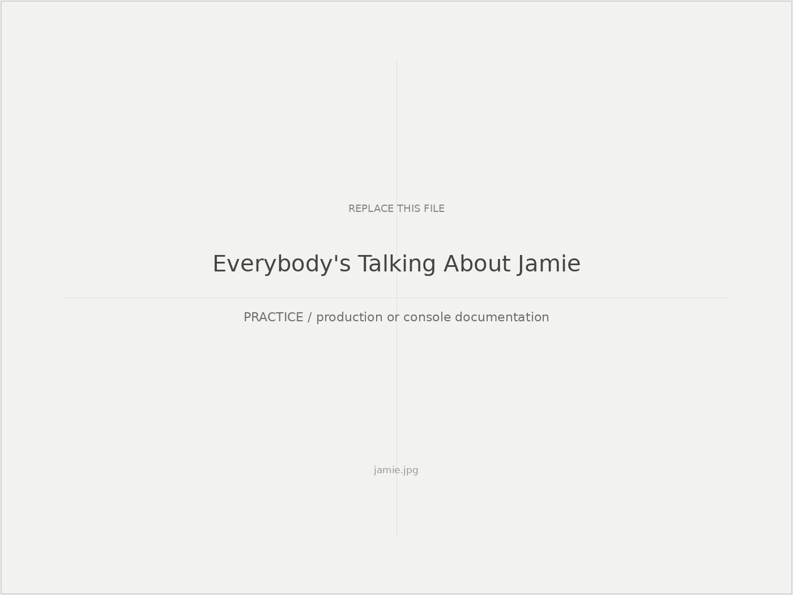
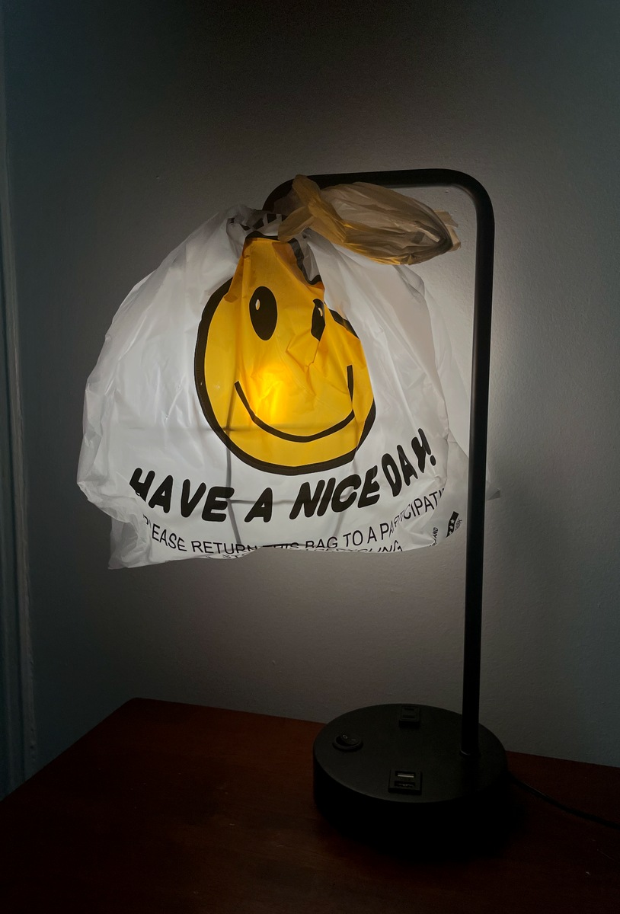
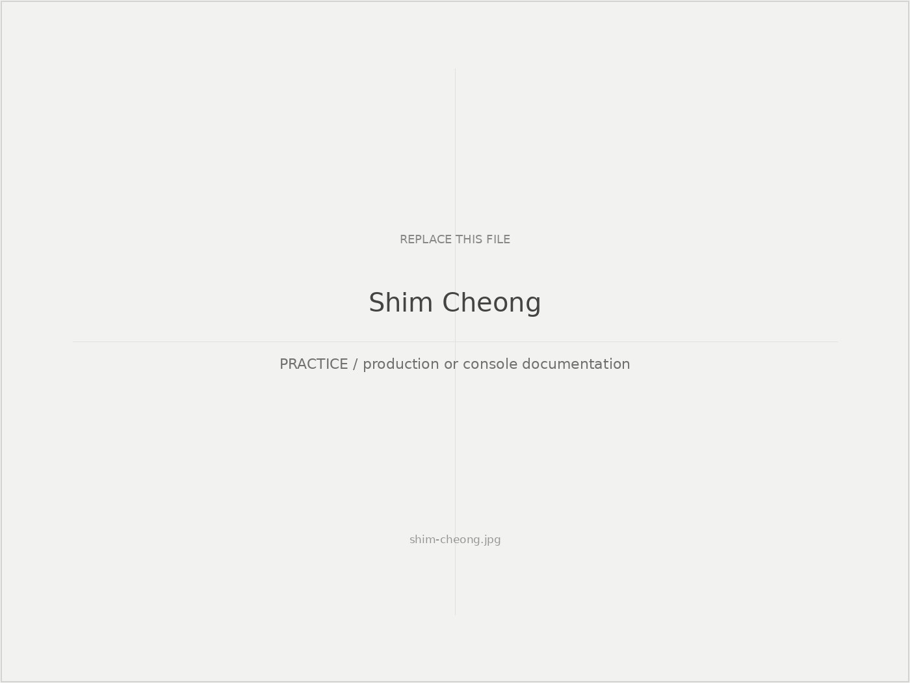
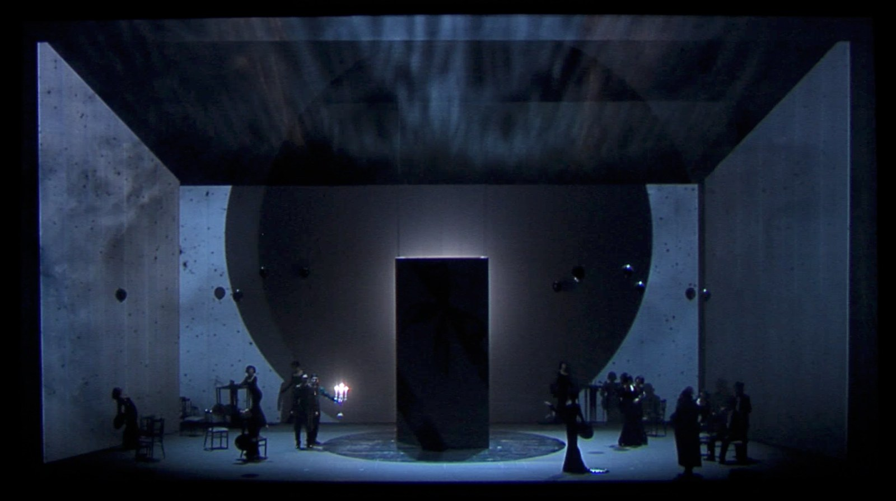
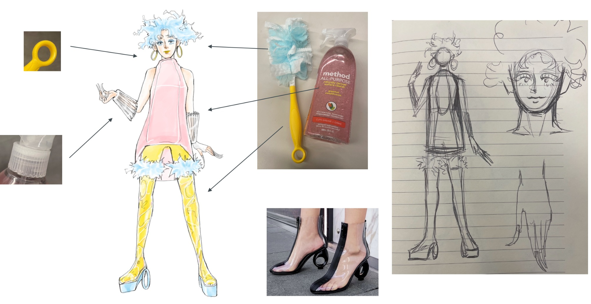
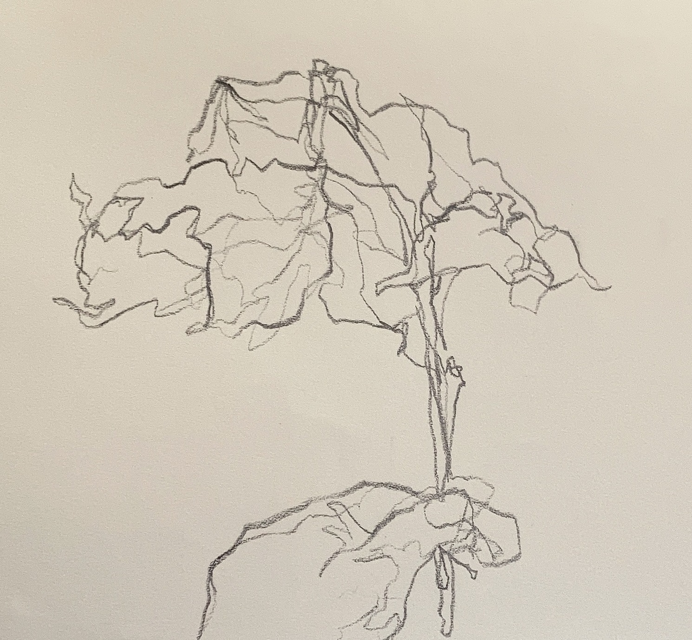
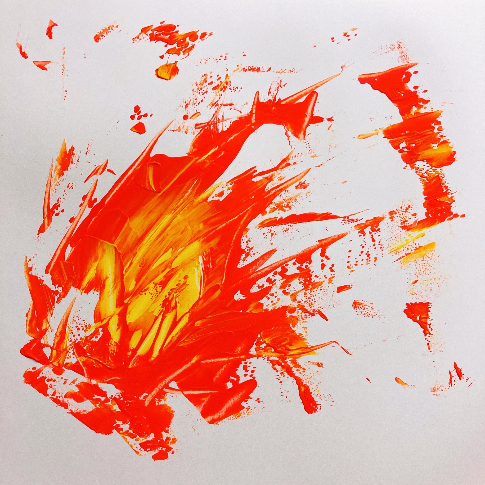
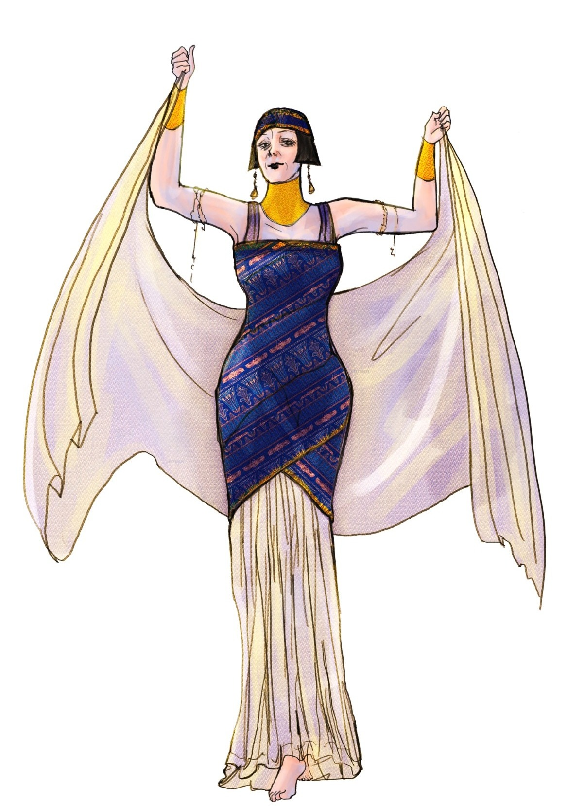
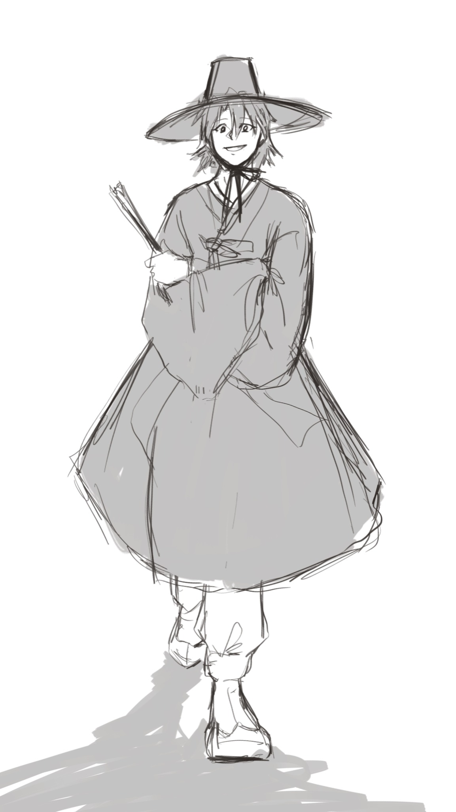

Everybody's Talking About Jamie
Lighting Designer + Supervisor
Production documentation and console / systems work.
Lighting Designer · Researcher
How do designed environments shape what we perceive, feel, and understand?

Selected performance, spatial, material, and research studies tracing an evolving inquiry into light, perception, and environment.
Selected professional programming and production work across theatre, musical theatre, and opera.

Lighting Designer + Supervisor
Production documentation and console / systems work.

Programmer + Assistant
National Theater of Korea.

Programmer
Selected opera programming work.
Observation, translation, color, and form.





Awards, selections, and exhibitions.
Selected professional, academic, and exhibition experience.